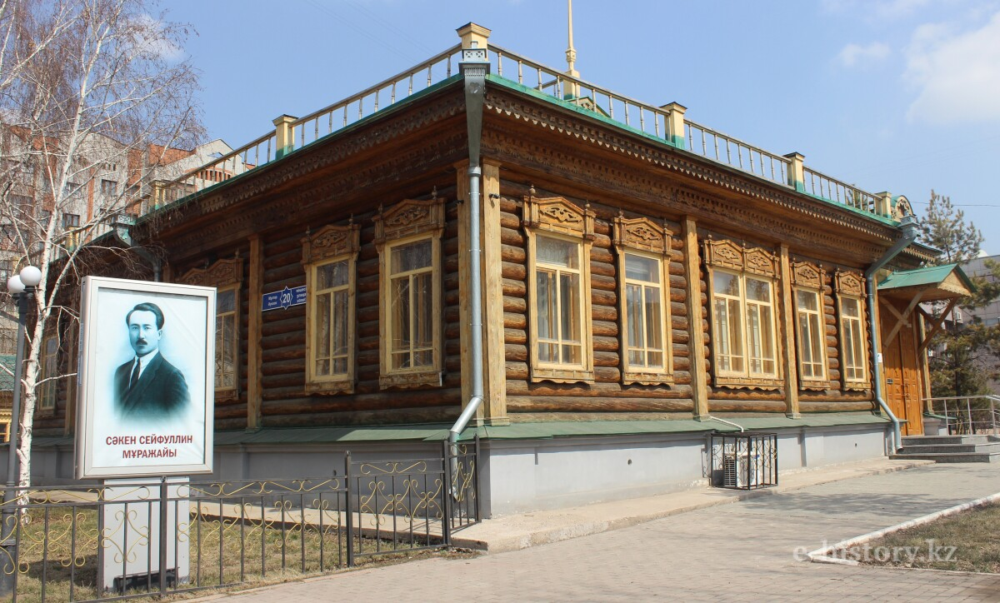

History of the Museum
The State Museum named after Saken Seifullin was established in 1988 in Astana. The museum was created to preserve the memory of the great Kazakh writer and to introduce his life and work to future generations.
Over the years, the museum has become an important cultural and educational center, where visitors can learn about the history of Kazakhstan and national literature.
News & Special Events
Special Exhibition: Join us this month for an exclusive exhibition featuring rare manuscripts and personal correspondence from Seifullin's early career.
Guided tours are available in Kazakh, Russian, and English. Please book in advance on our Visit page.

Historical Importance
The museum is not only a place of memory, but also a symbol of the country's cultural identity. It holds more than 5,000 unique artifacts.